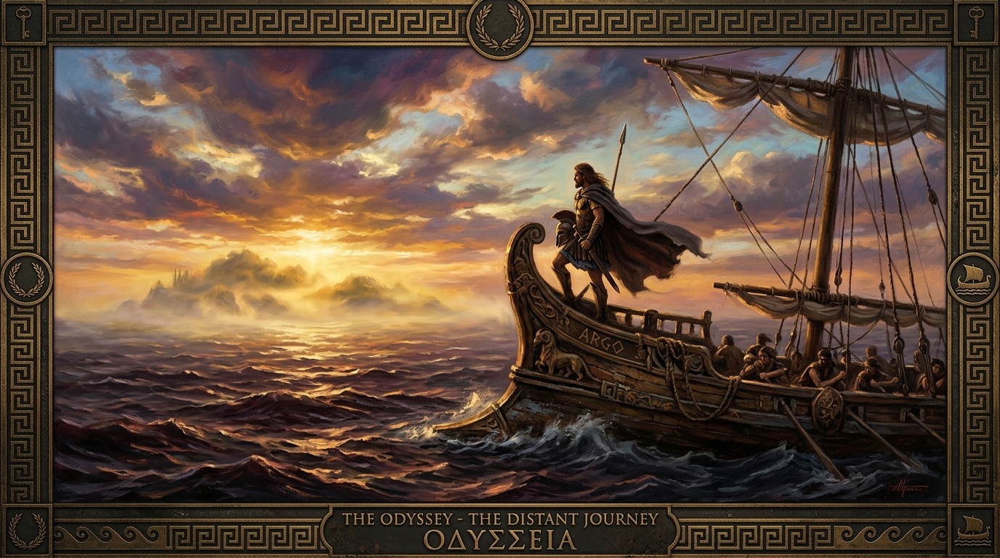
Homer's Epic Poem · c. 8th Century BCE
A School of Homecoming
Deep Patterns in Religion, Spirituality, Art, Music & Human Understanding
Begin the Journey ↓The Odyssey is, on the surface, the story of one man's journey home from war. But beneath that surface lies something far more extraordinary — a map of the human soul navigating every force that can make us forget who we are and where we belong.
Written nearly three thousand years ago, Homer's epic remains startlingly alive because its events are specific, but its relations are portable. Every challenge Odysseus faces — from enchantresses to monsters, from beautiful prisons to deadly songs — mirrors something we still encounter in our own lives.
The opposite of being lost is not knowing exactly where you are.
The opposite of being lost is still knowing what you are trying to return to.
Fourteen chapters exploring every major episode of the Odyssey — told accessibly, analyzed deeply, and connected to art, music, and questions that still matter today.
Paintings by Waterhouse, Turner, and new artworks illuminate each episode. Classical music by Debussy, Beethoven, Mozart, and Monteverdi accompany the journey.
Each chapter ends with a question designed to connect Homer's ancient wisdom to your own life — not as homework, but as genuine invitation.
A beautiful overview of Homer's epic and why it still matters after nearly 3,000 years.
From the smoldering ruins of Troy across the wine-dark sea, Odysseus' path home to Ithaca wound through ten years of wonders and terrors. Each stop tested a different dimension of his humanity.
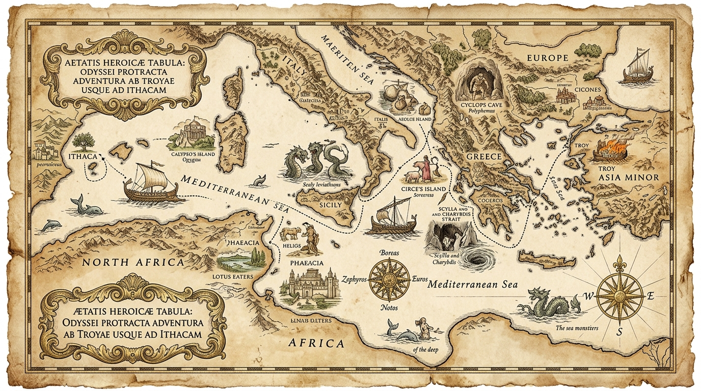
Source: Illustrative AI cartography · The Wanderings of Odysseus
How can a human being preserve orientation toward a distant good while immediate circumstances continuously distort perception and desire?
That single question explains an extraordinary amount of the poem. Nostos — homecoming — is the governing force. Ithaca exists in Odysseus' mind long before it exists again beneath his feet. Every obstacle, from Calypso to the Sirens, interferes with that orientation in a different way.
The Lotus-Eaters erase the desire for home. The Underworld restores it through ancestral memory. Argos recognizes continuity across time.
Polyphemus consumes guests. The suitors consume their host. The Phaeacians restore a stranger before knowing his name.
"Nobody" saves Odysseus from the Cyclops. Then his ego nearly undoes everything. Problem-solving intelligence is not the same as self-mastery.
Behavior, memories, scars, the bow, and the secret of the bed — increasingly difficult-to-fake signals prove identity.
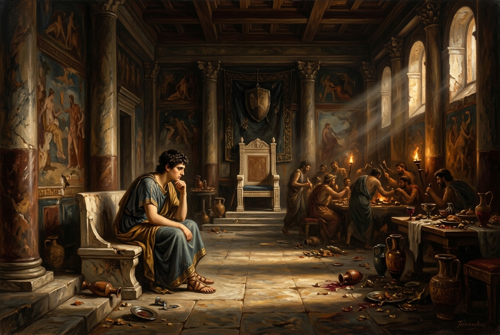
Books 1–4 · The hero is missing, and a son must awaken
The Odyssey begins not with Odysseus, but with his absence. For twenty years — ten at Troy, ten more lost at sea — the king of Ithaca has been gone. In his palace, over a hundred suitors feast on his wealth, court his wife Penelope, and plan to kill his son Telemachus.
It is Athena, goddess of wisdom, who arrives disguised as a traveler to awaken something in the young prince. She doesn't fight the suitors for him. She doesn't reveal the future. She simply asks a question that ignites his will: "Are you truly the son of Odysseus?"
Before "the father" can return externally, something must mature internally. Telemachus represents the moment when waiting becomes vocation. One can inherit a crisis without having caused it, yet eventually become responsible for responding to it.
This resembles the grammar of calling — summons does not substitute for human agency but awakens it.
Where in my life am I waiting for the return of something whose absence now requires me to mature?
Source: Illustrative AI artwork · Based on John William Waterhouse, Penelope and the Suitors (1912)
Inspired by John William Waterhouse — Penelope and the Suitors (1912). Waterhouse captures the tension of a household under siege: Penelope sits at her loom on the upper level, weaving by day and unraveling by night — a strategy of quiet resistance. Below, the suitors feast and carouse recklessly in Odysseus' own hall, consuming his wealth and disgracing his home. The painting's split composition mirrors the split in Ithaca itself: patience and intelligence above, appetite and arrogance below.
Beethoven wrote this for Goethe's play about a hero who resists tyranny. The overture builds from oppressive darkness to blazing triumph — mirroring Telemachus' journey from helplessness to agency.
Mozart was only 17 when he wrote this urgent, driven symphony. Its youthful intensity mirrors Telemachus — a young man confronting a crisis he didn't create, searching for the father he barely remembers.
Fauré's opera (1907–12) is a direct adaptation of the Odyssey. The hero's wife becomes the protagonist whose faithfulness and intelligence carry the drama.
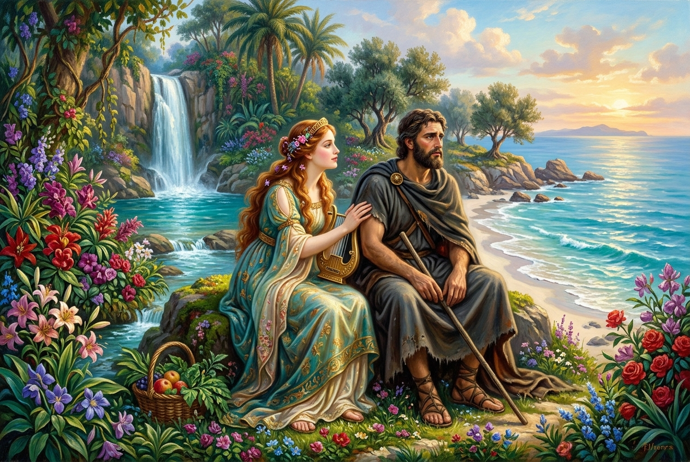
Book 5 · Paradise that holds you captive
Calypso, whose name means "she who conceals," offers Odysseus something most humans would consider the ultimate prize: eternal life on a paradise island with a goddess who loves him. Crystal waters, exotic flowers, freedom from aging and death.
And yet, every day, Odysseus sits on the shore and weeps. He gazes across the empty sea toward an island he cannot see, longing for a mortal wife and a rocky kingdom that will never match this splendor. The obstacle here is not horror — it is protected suspension.
Some prisons hurt. Others satisfy.
The latter may be harder to leave.
Calypso asks a question that cuts deep: can a life be pleasant and nevertheless be false to one's deeper orientation?
In systems thinking, Calypso represents a local optimum — a stable, satisfying solution that prevents movement toward a larger objective. Think of a comfortable job that prevents you from pursuing your true calling, or a relationship that feels safe but leaves your soul untouched.
Christianity values eternal life, yet Odysseus rejects a form of escape from mortal belonging. These ideas should not be collapsed. Their juxtaposition produces a stronger question: What sort of eternity would actually count as fulfillment? Mere endless continuation? Or completed communion?
What in my life is comfortable enough to be invisible as a cage?
Widely considered the most beautiful slow movement ever written. The clarinet's warm voice sings of acceptance tinged with sorrow — Odysseus weeping on a paradise shore, longing for a mortal home he chose over immortality.
Debussy composed “The Sea” while studying Japanese wave prints. The music captures the sea as Homer depicts it: the “wine-dark sea” that is both captor and pathway, prison wall and road home.
This nocturne unfolds like a conversation between longing and consolation. Its luminous melody evokes the paradox of Calypso's island: overwhelming beauty that cannot substitute for belonging.
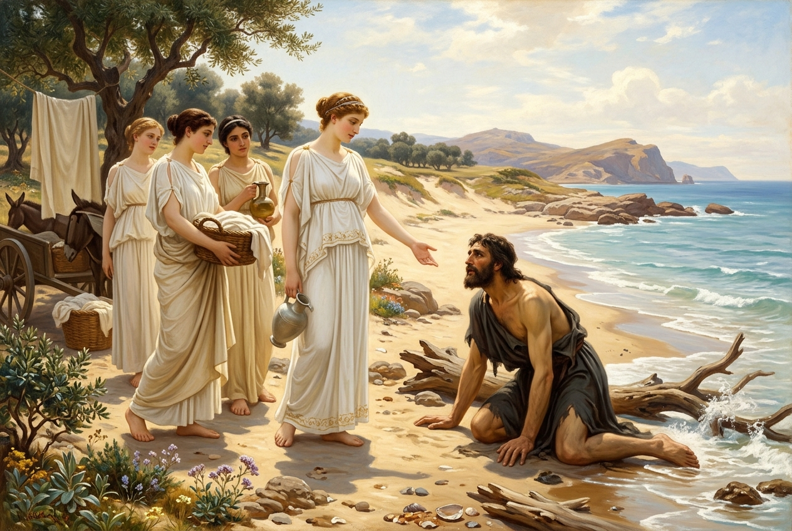
Books 6–8 · Civilization begins with receiving the stranger
Shipwrecked, naked, and socially erased, Odysseus crawls onto a beach where a young princess named Nausicaa is washing laundry with her handmaidens. He is at his most vulnerable — stripped of armor, title, ship, and crew. He has nothing to offer.
And yet the Phaeacians receive him. They clothe him, feed him, listen to his story, entertain him with games and song, and ultimately carry him home on one of their magical ships. All this before they know who he is.
Hospitality can restore personhood before biography is known. The stranger is not first required to prove usefulness. This creates a genuine dialogue with biblical hospitality — Hebrews 13:2 famously makes care for strangers spiritually consequential.
In systems terms, hospitality is a technology for reducing uncertainty between disconnected social nodes. The Phaeacians demonstrate that the highest civilization is measured not by wealth or power, but by how it treats the unknown.
Do we require identity before offering dignity, or can dignity precede identification?
The Larghetto is one of the most gentle, trusting pieces in all of music. Its intimacy embodies what the Phaeacians offer: a space where a stranger is received with dignity before being asked for credentials.
The fresh, luminous sunrise that opens Grieg's Peer Gynt Suite captures the moment Odysseus washes ashore — stripped of everything, yet greeted by morning light and the sound of Nausicaa's laughter.
Subtitled “Scene by the brook,” this movement evokes the very landscape where Nausicaa discovers Odysseus — a flowing stream, birdsong, and the gentle rhythms of a world at peace.
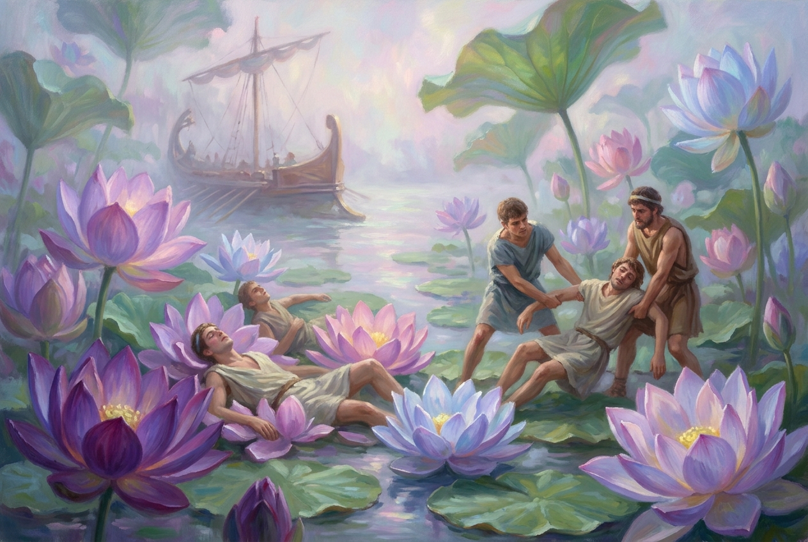
Book 9 · The two ways of losing the mission
Two encounters, two opposite errors. At the island of the Cicones, Odysseus' men raid a city, win easily, but then refuse to leave. They stay too long celebrating, and the Cicones return with reinforcements, killing many. Too much appetite after achieving the objective.
Then they reach the land of the Lotus-Eaters, where anyone who tastes the lotus flower forgets everything — their mission, their home, their identity. The men who eat the lotus have to be dragged weeping back to the ships. Pleasure erases the objective itself.
The opposite of homecoming is not necessarily choosing the wrong home.
It may be forgetting that home exists.
The lotus produces one of the epic's most profound ideas. This resembles addiction, present bias, and attentional capture more than conventional villainy. The dangerous thing is attractive precisely because it makes the distant good stop mattering.
Biblical traditions place enormous weight on remembering — remembering covenant, deliverance, commandment. The resemblance is conceptually powerful.
What are the "lotus flowers" in my own life — the pleasant distractions that don't destroy me directly, but quietly make me forget what I was trying to return to?
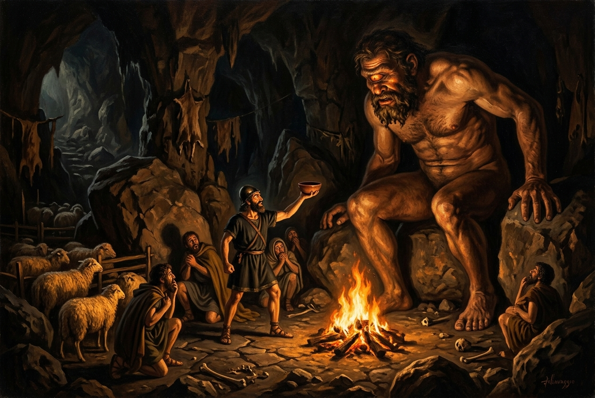
Book 9 · Cunning saves him. Ego compromises the victory.
Trapped inside a sealed cave with a one-eyed giant who eats his men two at a time, Odysseus executes one of the most brilliant escape plans in all of literature. He tells the Cyclops his name is "Nobody" (Outis). He gets the monster drunk. He blinds him with a sharpened stake. When Polyphemus screams for help and the other Cyclopes ask who's hurting him, he shouts "Nobody is hurting me!" — and they walk away.
The men hide beneath the bellies of sheep and escape. It is a masterpiece of timing, language, courage, and cunning.
And then Odysseus ruins it.
Cunning saves him. Ego compromises the victory.
Safely back on his ship, Odysseus cannot resist taunting the blinded giant. He shouts his real name — "It was Odysseus who blinded you!" — and the Cyclops, now knowing who to curse, calls upon his father Poseidon, god of the sea, to punish his attacker. This single act of boasting will cost Odysseus ten more years of suffering.
Odysseus knows how to hide his identity but cannot tolerate remaining unrecognized. The poem repeatedly distinguishes problem-solving intelligence from self-mastery. This may be the deepest spiritual question of the episode:
Can I accept having done something good if nobody knows that I was the one who did it?
Source: Illustrative AI artwork · Based on J.M.W. Turner, Ulysses Deriding Polyphemus (1829)
Inspired by J.M.W. Turner — Ulysses deriding Polyphemus (1829, National Gallery, London). Turner chose precisely the paradoxical moment — victory followed by dangerous boasting. The blinded Cyclops is a dark silhouette on the cliffs, almost absorbed into the mountain itself, while Odysseus' ship sails triumphantly into a sunrise of almost supernatural beauty. The sky blazes with Turner's revolutionary light. But beauty masks danger: this is the exact moment Odysseus shouts his real name, inviting Poseidon's curse. Turner understood that triumph and catastrophe can occupy the same frame.
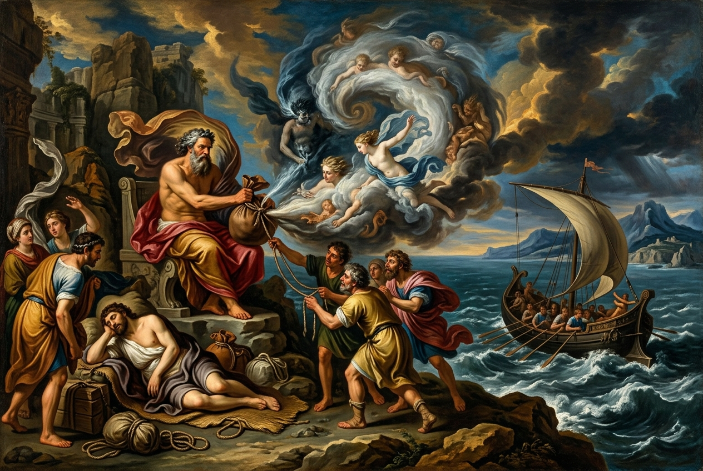
Book 10 · Catastrophe begins before the catastrophe
Aeolus, keeper of the winds, gives Odysseus an extraordinary gift: all the dangerous winds sealed in a leather bag, with only the gentle west wind left free to carry them home. They sail for nine days. Ithaca appears on the horizon. Odysseus, exhausted, falls asleep.
His crew, who don't know what's in the bag and suspect Odysseus is hoarding treasure, open it. The winds burst free, and the fleet is blown all the way back to Aeolus — who refuses to help them a second time. Then the Laestrygonians, giant cannibals, destroy all but one ship.
The common reading says "the crew was foolish." But deeper questions emerge: Why did they distrust Odysseus? Why was information distributed so unevenly? Why did mission-critical safety depend upon unexplained obedience?
This resembles modern cascading failure: small governance weakness → increased exposure → catastrophic event. A leader must create conditions in which others can participate intelligently in knowing the right thing.
Where does my own need for control prevent others from understanding what they're carrying?
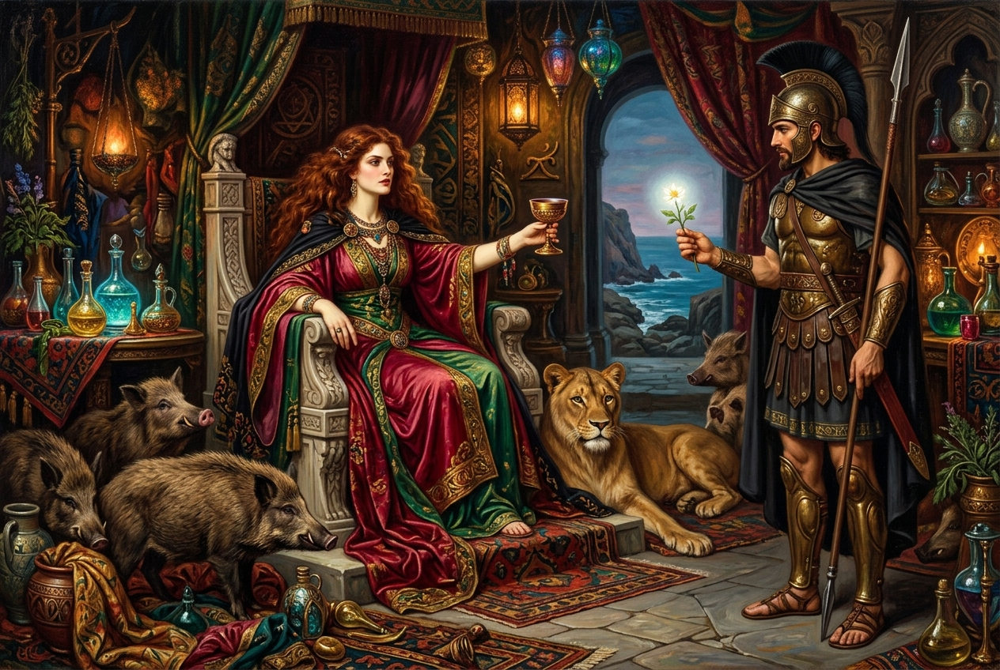
Book 10 · Transformation, resistance, and unexpected wisdom
On the island of Aeaea, the goddess-sorceress Circe drugs Odysseus' companions and transforms them into swine. They retain their human minds inside animal bodies — aware, but powerless. It is not death. It is something arguably worse: a change of state so total that the person remains conscious of what they've lost.
The god Hermes gives Odysseus the protective herb moly — a mysterious white flower with a black root that mortals cannot ordinarily pluck from the earth. Armed with this divine protection and strategic instructions, Odysseus resists Circe's magic, forces her to restore his companions, and — most intriguingly — the dangerous sorceress eventually becomes host, lover, and guide.
Human rationality is more fragile than we like to imagine. Under certain conditions — substances, environments, power dynamics — our higher capacities can be overridden. The transformation is not simply voluntary.
Appetite becomes dangerous when it absorbs consciousness rather than taking its proper place inside it. Moly can be imaginatively compared with grace, discipline, knowledge, or spiritual protection — but these are readerly analogies, not Homer's explicit theology.
Environmental conditions can change state. But crucially, transformation can also be reversed. The system is not locked into degradation.
Circe changes from enemy to teacher. Mature wisdom does not merely destroy the dangerous "other" — it establishes a transformed relationship with what was dangerous. This is perhaps the most radical insight of the episode.
Source: Illustrative AI artwork · Based on John William Waterhouse, Circe Offering the Cup to Ulysses (1891)
Inspired by John William Waterhouse — Circe Offering the Cup to Ulysses (1891, Gallery Oldham). Waterhouse places Circe enthroned in her palace of enchantment, surrounded by her transformed victims — men turned to beasts. She extends the fatal cup with calm confidence. But look carefully: Odysseus is present, holding the protective herb moly that glows white in his hand. The painting makes the power relationship visible. Circe commands the scene, yet the viewer knows her magic will fail against this particular visitor. The tension between her certainty and his secret protection creates the drama.
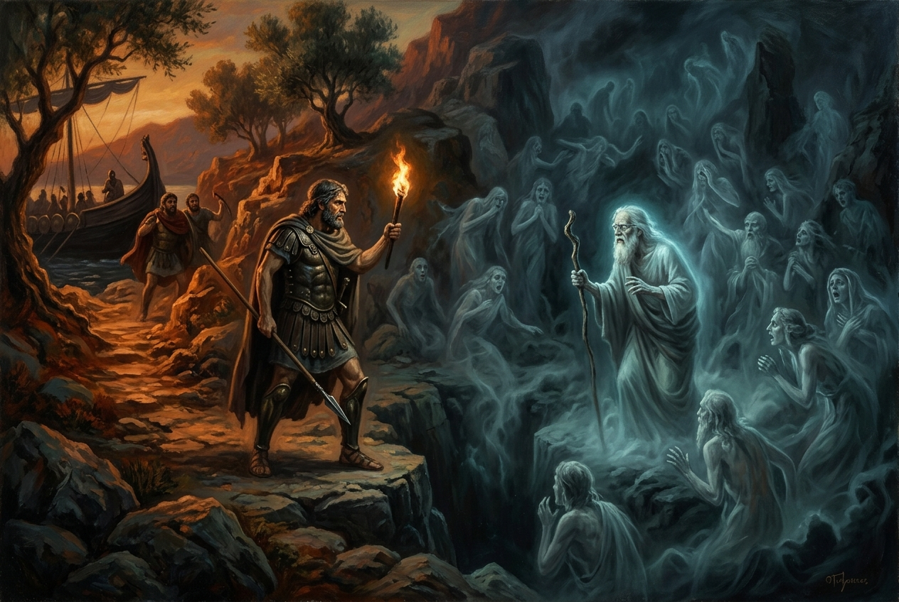
Book 11 · Descend in order to continue
Odysseus sails to the edge of the world and performs a ritual sacrifice over a pit. The shades of the dead rise — transparent, voiceless until they drink blood. He speaks with the blind prophet Tiresias, who gives him the guidance he needs. He sees his mother, Anticlea, and learns she died of grief for him. He encounters Ajax, still furious; Achilles, who would rather be a living slave than king of the dead; and Agamemnon, murdered by his own wife.
The route forward passes downward.
One cannot complete homecoming while remaining psychologically insulated from mortality.
The Underworld functions as a memory archive. The dead no longer act politically, yet they continue supplying information that reorganizes the living. The confrontation with death doesn't destroy Odysseus — it corrects his attention by introducing mortality as a real, personal fact.
Ask not "What happens when I die?" first, but: "What would change in my life if mortality stopped being an abstraction?"
The most famous musical meditation on death ever written. The heavy tread gives way to a luminous middle section — a memory of beauty in the midst of mourning. Odysseus descends among the dead and finds not only horror but information.
Mozart died before completing this Requiem. The Lacrimosa (“Day of Tears”) was the last music he wrote — a composer literally encountering his own mortality while creating art about death.
Its hypnotic, ghostly arpeggios create a landscape between waking and dreaming — the liminal space of the Underworld itself, where the dead drift as shadows remembering life.
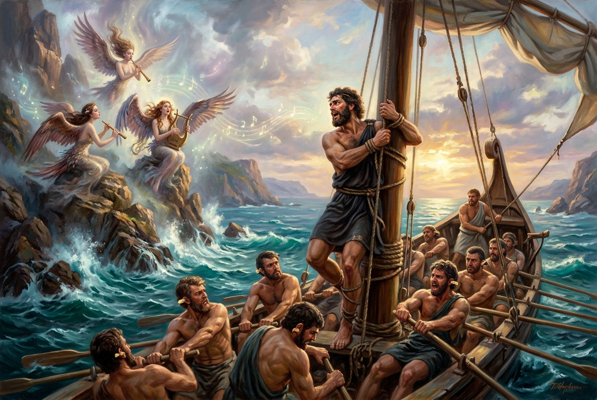
Book 12 · The most modern idea in the ancient world
The crew plugs their ears with wax. Odysseus, who insists on hearing the Sirens, has himself bound to the mast under his own prior command. When the song fills his mind with desire so intense he begs to be released, his crew — obeying his earlier self rather than his presently desperate self — tightens the ropes.
"Future me will not be trustworthy under these conditions."
So present Odysseus changes what future Odysseus is capable of doing.
This is one of the cleanest models of precommitment ever imagined. It moves us beyond the simplistic idea that virtue means "having enough willpower." Sometimes wisdom means not requiring heroic willpower at the moment of maximum vulnerability.
Sometimes freedom is protected not by eliminating constraints,
but by choosing the right constraint before temptation arrives.
Here Christian influence becomes historically concrete. Clement of Alexandria used the Sirens in Christian exhortation. Later, Maximus of Turin explicitly reconfigured the mast as an image of the cross. In that transformation, clever self-binding acquires a new theological meaning: salvation by fastening oneself to a structure that can withstand the seductive forces one cannot safely negotiate alone.
Source: Illustrative AI artwork · Based on John William Waterhouse, Ulysses and the Sirens (1891)
Inspired by John William Waterhouse — Ulysses and the Sirens (1891, National Gallery of Victoria). Unlike the popular mermaid image from later centuries, Waterhouse deliberately chose the ancient bird-bodied Siren — women with vast, dark wings who swoop onto the ship itself. Odysseus is bound to the mast, face contorted with longing and struggle, while his wax-eared crew rows on, utterly oblivious to the deadly beauty surrounding them. The painting captures the central paradox: the bound man is the only one who truly experiences the song, and the free men are the ones who are truly deaf to it.
Debussy's Sirènes uses the sea and wordless female voices to create an elusive musical field of attraction — not illustration, but evocation.
What if the Sirens represent not pleasure but certainty? Their attraction includes privileged knowledge. That would make them relevant not only to sensual temptation but to ideologies, conspiracy systems, charismatic gurus, and technologies that promise complete explanatory closure.
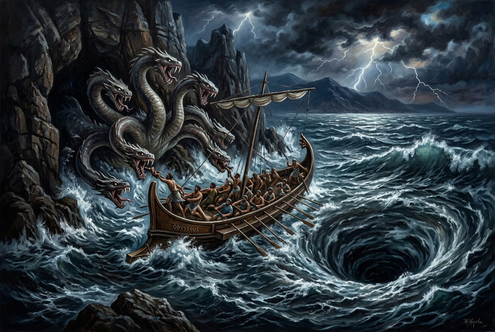
Book 12 · Wisdom without a clean victory
Circe warns Odysseus that the strait ahead offers no lossless option. On one side, Charybdis — a monstrous whirlpool that will swallow the entire ship. On the other, Scylla — a six-headed monster living in a cliff face who will snatch and devour six men. There is no path that avoids both.
A decision can be prudent and still tragic.
Modern culture often equates correct decisions with good outcomes. Scylla and Charybdis expose the mistake. The episode dismantles the fantasy that sufficient wisdom will eliminate suffering.
The deeper lesson is not "sacrifice six to save the rest." That is too clean. The harder insight is: some decisions require both choosing and mourning.
And the inverse perspective matters: from the viewpoint of the men seized by Scylla, "optimal decision" is a chilling abstraction.
Where in my life am I looking for a lossless option that doesn't exist — and what becomes possible when I stop?
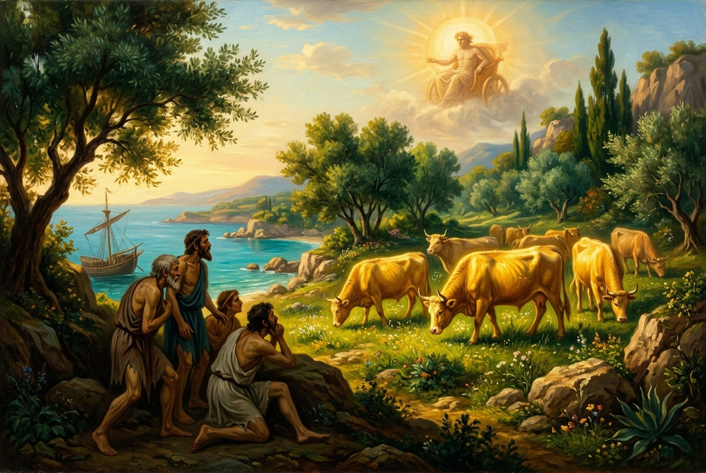
Book 12 · What does "sacred" mean during scarcity?
The crew has been warned — by Tiresias, by Circe, by Odysseus himself — not to harm the sacred golden cattle of Helios, the sun god. But they are stranded on the island by bad weather. Days pass. Weeks. Their food runs out. They are starving.
While Odysseus sleeps, his men make a choice they know is forbidden. They slaughter the divine cattle and feast. When Zeus learns of the sacrilege, he destroys their ship with a thunderbolt. Odysseus alone survives.
A shallow reading says: "They broke the command and were punished." A more serious reading notices that they are starving.
The spiritual problem becomes: Does extreme necessity eliminate sacred limits, reduce responsibility, or reveal precisely why a protected boundary was created?
This resembles ecological commons problems. A protected resource is most tempting to consume during crisis. Yet once every long-term constraint is converted into short-term survival, the future can disappear.
What boundaries do I treat as negotiable the moment circumstances become difficult — and what does that reveal about what I actually hold sacred?
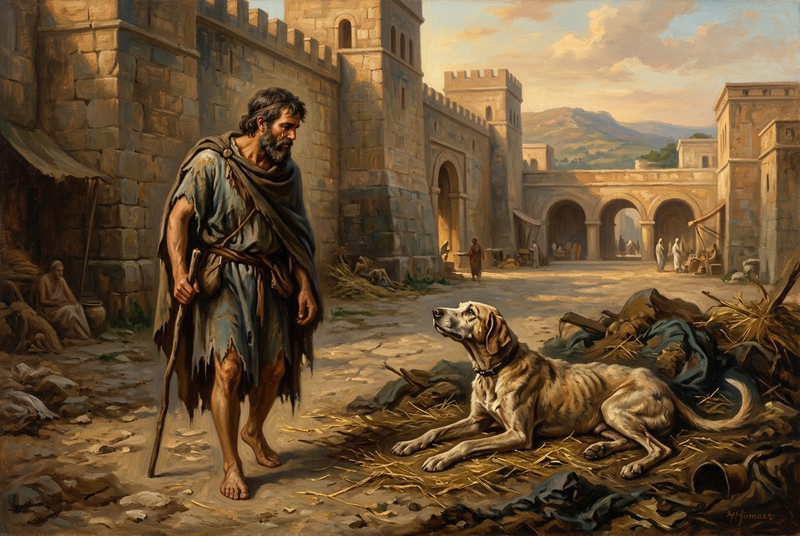
Books 13–17 · Almost nobody recognizes the king
The Phaeacians finally carry Odysseus home to Ithaca while he sleeps. Athena disguises him as an elderly beggar. He enters his own palace, his own world, without the visual signs of kingship — and can therefore observe who people have become during his twenty-year absence.
The disguise is much more than camouflage.
It is an audit of reality without status distortion.
Recognition unfolds gradually. Telemachus is brought into the truth. The old dog Argos, lying neglected on a dung heap, lifts his head and wags his tail — recognizing his master after twenty years. A tear rolls down Odysseus' cheek. Argos dies.
Human society has become so corrupted by status, costume, fear, and strategy that an old animal sees continuity more quickly than most human beings. Argos bypasses the entire social theater of disguise. His recognition suggests an unsettling inversion: civilized humans can become less perceptive than an animal when perception is corrupted by hierarchy, ambition, or expectation.
Later, the old nurse Eurycleia recognizes Odysseus through his scar — a wound from a boar hunt in his youth, knowledge written on the body itself.
The king is present precisely where the world sees a beggar.
The delayed-recognition pattern in Luke 24's Emmaus narrative can be placed beside Odysseus' return: someone significant is present while ordinary perception fails to know who is present. There is no need to assert literary dependence to make the juxtaposition spiritually fruitful.
Who would know me if all evidence of rank, wealth, profession, youth, and prestige vanished?
Monteverdi's 1640 opera — one of the earliest and greatest musical retellings of Odysseus' return to Ithaca.
Beethoven's Sonata No. 26 has three movements titled Farewell, Absence, Return. The final movement Das Wiedersehen bursts with joy — the musical structure mirrors the Odyssey's own three-act shape.
Grieg gave this lyric piece the title Hjemover — “Homeward.” It builds from quiet anticipation to tender arrival, capturing the emotional texture of approaching a place you've been away from too long.
Composed in 1640, one of the first operas ever written and a direct adaptation of the Odyssey. Monteverdi gave musical voice to Homer's characters. The recognition scene, set to music, becomes unbearably moving.
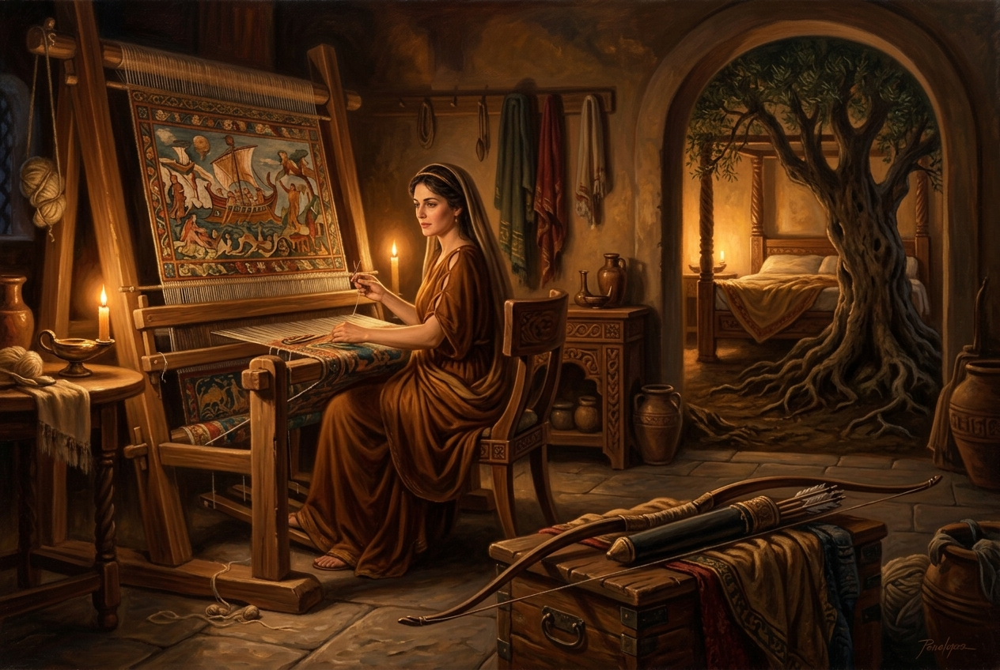
Books 21–23 · The deepest test of identity
Penelope is often reduced to an icon of passive fidelity. The poem gives us something far more interesting: she delays, tests, conceals, infers, and refuses premature recognition. Her intelligence resembles Odysseus' own.
She devises the bow contest: only the man who can string Odysseus' great bow and shoot an arrow through twelve axe-handles will win her hand. None of the suitors can even bend the bow. Odysseus, still disguised, strings it effortlessly.
An impostor might possibly reproduce appearance. A powerful stranger might demonstrate strength. But the bow test reveals deep physical familiarity — the intimate knowledge of a specific weapon.
The bed contains information shared only by the couple: Odysseus built it around the living trunk of an olive tree. Penelope's suggestion that it be moved triggers the reaction that proves he knows what the bed is.
Odysseus has spent the epic moving.
The final sign of home is something that cannot move because it is rooted in living earth.
The bed joins opposites:
Home becomes not simply "Ithaca" but shared knowledge embedded in a living structure.
Source: Illustrative AI artwork · Inspired by Pre-Raphaelite classical paintings
Penelope weaves by candlelight in her chamber — the loom before her, the great bow resting in the foreground, and through an archway, the marriage bed built around the living olive tree whose roots grow into the earth. These three objects represent three forms of intelligence: the loom is temporal strategy (weaving and unweaving to buy time), the bow is a test of capability, and the bed is the ultimate test of identity — shared knowledge that no impostor could possess. Fauré's opera Pénélope (1907–12) shifts the center of Odyssean reception toward Penelope's consciousness rather than treating her merely as the hero's destination.
Could Penelope's loom be understood as reversible computation? By day she advances an apparently irreversible process; by night she reverses it, preserving optionality and buying time. What appears domestic becomes a sophisticated temporal technology.
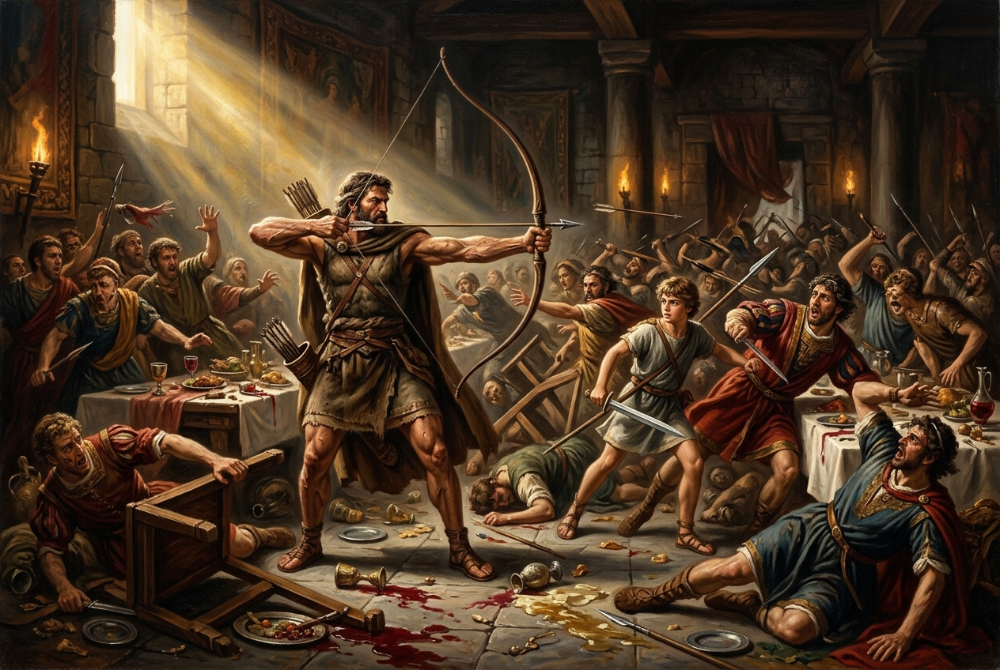
Books 22–24 · The deepest enemy of all
Odysseus and his allies slaughter the suitors in a terrible act of justice. Blood pools on the great hall floor. The household is finally, violently reclaimed.
But Homer does not write "and he lived happily ever after."
The relatives of those killed now have grievances of their own. They gather weapons. They march on the palace. Violence threatens to generate its own future.
The deepest enemy is finally not Cyclops, witch, Siren, whirlpool, or rival man.
It is the capacity of violence to generate its own future.
The final homecoming requires something different from heroic victory. It requires a stopping rule. Athena intervenes — a kind of social circuit breaker — to halt the cycle of retaliation.
A society cannot become home again if every act of justice generates the next war.
Can I distinguish winning from ending the conflict?
The opera's final scene gives musical form to the Odyssey's ending — the reunion duet “Sospirato mio sole” where all longing resolves into quiet radiance.
After the storm, the finale is a “Shepherd's Hymn of Thanksgiving.” Peace is restored after disruption — not mere victory, but the hard-won cessation of violence.
Written weeks before Mozart's death — the simplest and most luminous choral work ever composed. After all the epic's complexity, the final state is: presence, recognition, peace.
The deepest pattern in the Odyssey is not simply the hero's journey. It is something more precise: the protection of a long-term orientation against forces that corrupt attention.
Keep Ithaca mentally real when it is physically absent.
Construct constraints where desire cannot safely govern itself.
Do not confuse appearances with reality.
Recover identity through information that survives disguise and time.
Do not stop at individual victory; restore relationships and stabilize the larger system.
A consciousness is repeatedly exposed to systems capable of making it forget what it loves. Wisdom consists in building memory, relationships, constraints, tests, and forms of recognition strong enough for the distant good to remain real.
Reception itself becomes another odyssey. Homer → Artist → The anxieties of the artist's age → Our interpretation now. Each painting tells us as much about the painter's world as about Homer's.
The hero does not simply defeat chaos. He carries some chaos within the capacities that make him heroic.
Maturity consists not in becoming omnipotent, but in becoming more intelligent about the conditions under which power works and fails.
The opposite of being lost is not knowing exactly where you are.
The opposite of being lost is still knowing
what you are trying to return to.
The Odyssey survives so many transformations because its events are specific, but its relations are portable. Its recurring pattern is larger than "a man wants to go home."
It is: a consciousness repeatedly exposed to systems capable of making it forget what it loves.
Wisdom consists in building memory, relationships, constraints, tests, and forms of recognition strong enough for the distant good to remain real.